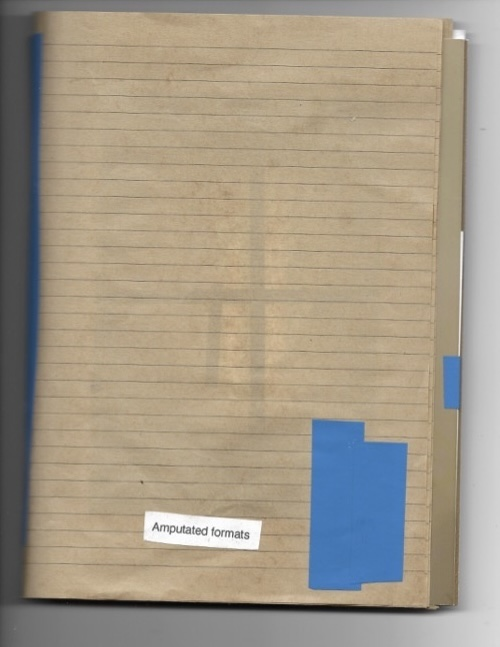

Amputated formats, 2023, presented at Compound, Systema, Marsielles 2023

The collage book is made with photos that also appear in 'Through doors becoming the wall' (2022)
from the staircase fire exit of a housing building.
The fractured poem about the potental of friendship.
A pdf of the work can be requested.